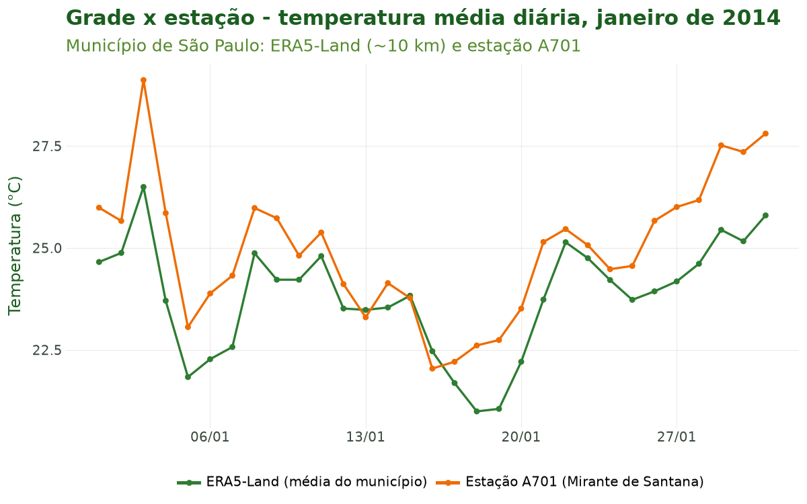
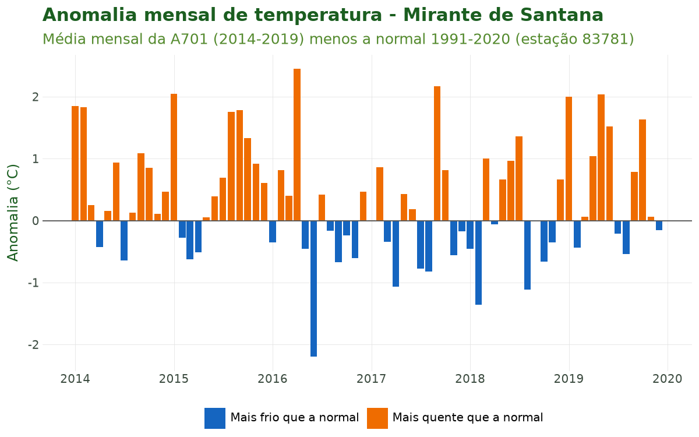
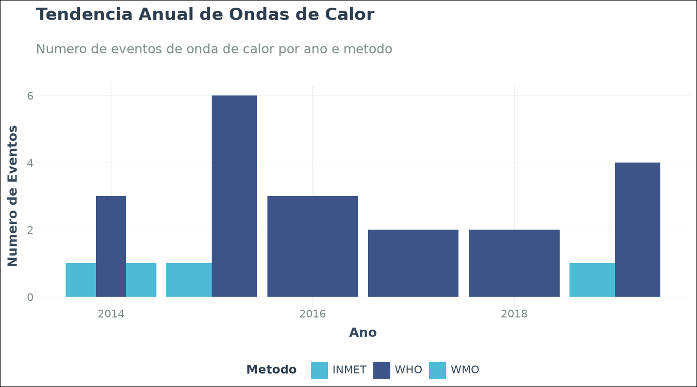
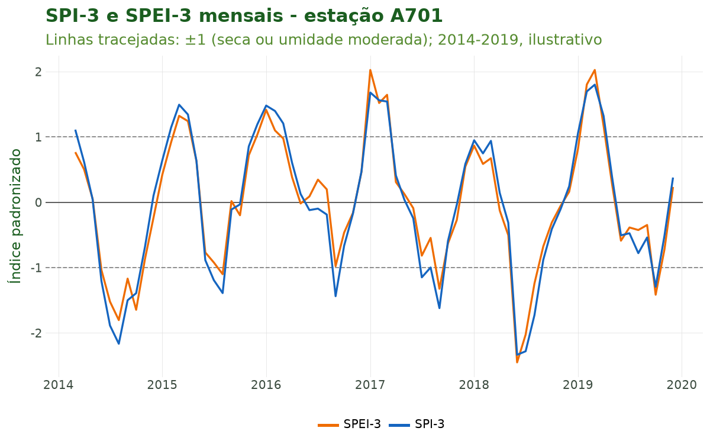

Tutorial 8: Clima em Grade e Dados Ambientais¶
← Voltar para a Trilha do Pipeline
Objetivo¶
Ao final deste tutorial você será capaz de integrar dados climáticos e ambientais em grade
(sensoriamento remoto e reanálise) à sua série de saúde: importar o ERA5-Land (~10 km) com
sus_grid_era5() e agregá-lo ao polígono municipal; conhecer a família completa sus_grid_*
(precipitação CHIRPS, focos de queimada, secas PDSI/SMVI, desmatamento PRODES e poluição
CAMS/GHAP/MERRA-2); e derivar indicadores climáticos para epidemiologia: anomalias, índices
bioclimáticos (sus_climate_compute_indicators()), ondas de calor
(sus_climate_compute_heatwaves() + sus_climate_plot_heatwaves()) e os índices de seca SPI
(sus_climate_compute_spi()) e SPEI (sus_climate_compute_spei()).
Esta é a oitava etapa do pipeline: enquanto o Tutorial 7 construiu a exposição climática a partir de estações do INMET (medições pontuais), aqui construímos uma exposição alternativa e complementar em grade — cobertura espacial contínua, sem lacunas de observação — que alimentará a modelagem do Tutorial 9.
Contexto científico¶
Estação vs. pixel: duas formas de medir a exposição¶
Uma estação meteorológica mede o clima em um ponto; um produto em grade representa o valor
médio de um pixel (uma célula de área fixa). O ERA5-Land (Muñoz-Sabater et al., 2021) é
uma reanálise: um modelo físico de superfície terrestre alimentado por observações, que produz
campos horários contínuos desde 1950 em resolução de ~0,1° (~10 km no equador). Para o Brasil,
o projeto ERA5-Land Daily Aggregates for Latin America (Saldanha, Zenodo, CC-BY 4.0)
disponibiliza agregados diários prontos, sem chave de API — é essa a fonte usada por
sus_grid_era5().
Três cuidados de quem trabalha com sensoriamento remoto e reanálise:
- Resolução e representatividade. Um pixel de ~10 km é uma média de área: suaviza extremos locais (ilhas de calor urbanas, microclimas de vale) que uma estação pontual captura. Em contrapartida, cobre municípios sem estação e não tem dados faltantes. Para um município extenso como São Paulo (~1.500 km²), dezenas de pixels são agregados ao polígono, com média ponderada pela área de interseção, o que evita viés de borda.
- Unidades físicas. Os arquivos NetCDF originais vêm em unidades do sistema internacional:
temperatura em Kelvin (K → °C: subtrair 273,15), precipitação em metros (m → mm:
multiplicar por 1.000) e pressão em Pa (Pa → hPa: dividir por 100).
sus_grid_era5()aplica essas conversões automaticamente e entrega colunas canônicas (tair_dry_bulb_c,rainfall_mm, ...). - Validação cruzada. Reanálise não substitui observação: o recomendado é comparar a série de grade com a estação do INMET mais próxima (Tutorial 7) antes de escolher a exposição do modelo — diferenças sistemáticas (viés) são esperadas e documentáveis. É o que fazemos na Figura 1.
Dos campos brutos aos indicadores epidemiológicos¶
A literatura de clima-saúde raramente usa a temperatura bruta diretamente:
- Anomalias (WMO, 2017) tornam cidades com climas distintos comparáveis e apontam os períodos extremos a correlacionar com picos de mortalidade (Gasparrini et al., 2017);
- Ondas de calor definidas por percentis e duração (Perkins & Alexander, 2013; Geirinhas et al., 2018) e pelo Excess Heat Factor — EHF (Nairn & Fawcett, 2015) capturam o efeito agudo do calor sustentado;
- SPI (McKee et al., 1993) e SPEI (Vicente-Serrano et al., 2010) padronizam seca e umidade em múltiplas escalas temporais — relevantes para doenças diarreicas, leptospirose e arboviroses;
- Índices bioclimáticos (UTCI, Bröde et al., 2012; WBGT, Liljegren et al., 2008; HI, Rothfusz, 1990) combinam temperatura, umidade, vento e radiação em uma única medida de estresse térmico humano.
Caso condutor. Seguimos com temperatura e desfechos de saúde em idosos (60+) na RM de São Paulo, 2014–2019. Neste tutorial importamos o ERA5-Land para o município de São Paulo, comparamos com a estação A701 e derivamos anomalias, ondas de calor e SPI/SPEI.
Dados utilizados¶
| Fonte | Função | Resolução | Período | Papel no caso |
|---|---|---|---|---|
| ERA5-Land (Zenodo) | sus_grid_era5() |
~10 km, diária | janeiro de 2014 | Exposição em grade e comparação com a estação |
| Estação A701 (INMET) | sus_climate_inmet() |
ponto, horária | 2014–2019 | Base dos índices (anomalia, ondas de calor, SPI/SPEI) |
| Normais 1991–2020 (estação 83781) | sus_climate_normals() |
ponto, mensal | 1991–2020 | Linha de base da anomalia |
| Série de óbitos respiratórios de idosos | Tutoriais 1 a 5 | município × dia | 2014–2019 | Desfecho de saúde |
Por que só um mês de ERA5-Land. O ERA5-Land é distribuído como um arquivo por variável e por
mês, sempre com a América Latina inteira: cerca de 95 MB cada. Um mês de temperatura e chuva
são dois arquivos (~190 MB); seis anos das quatro variáveis do caso seriam 288 arquivos (~27 GB).
Para mostrar a função e a comparação com a estação, um mês basta. Os índices precisam de anos de
dados — o SPI e o SPEI, de pelo menos 24 meses; as ondas de calor, de um período de referência para
os percentis — e por isso usam a série da estação A701 (2014–2019) do Tutorial 7. As funções são as
mesmas com o ERA5-Land de vários anos: basta pedir mais anos a sus_grid_era5().
A família sus_grid_* cobre outras fontes ambientais com a mesma gramática (anos e meses,
municipalities como GeoDataFrame, agregação pixel → polígono, cache):
| Função | Fonte | Tema |
|---|---|---|
sus_grid_chirps() |
CHIRPS (0,05°) | Precipitação (Funk et al., 2015) |
sus_grid_fires() |
INPE/Queimadas | Focos de calor |
sus_grid_pdsi() |
PDSI | Seca (índice de Palmer) |
sus_grid_smvi() |
SMVI | Seca-relâmpago (umidade do solo) |
sus_grid_prodes() |
PRODES/TerraBrasilis | Desmatamento |
sus_grid_pollution_cams() |
CAMS/Copernicus | Poluição do ar (reanálise) |
sus_grid_pollution_ghap() |
GHAP | PM2.5 em alta resolução |
sus_grid_pollution_merra2() |
MERRA-2/NASA | Aerossóis e poluentes |
sus_grid_join() |
— | Junta grades à base de saúde por município × data |
Pipeline completo¶
Os blocos abaixo reproduzem o que o script
tools/tutoriais/tutorial_08_clima_grade.py
executa. Comece refazendo, a partir do cache, a série de saúde dos tutoriais anteriores — agora com
contagem diária pelo município de residência — e a série horária da A701 (Tutorial 7):
import climasus4py as cs
import geopandas as gpd
import pandas as pd
obitos = cs.sus_data_import(system="SIM-DO", uf="SP", year=[2014, 2015, 2016, 2017, 2018, 2019])
obitos_limpo = cs.sus_data_clean_encoding(obitos)
obitos_padr = cs.sus_data_standardize(obitos_limpo, lang="pt")
RMSP = ["São Paulo", "Guarulhos", "São Bernardo do Campo", "Santo André",
"Osasco", "Mauá", "Carapicuíba", "Diadema"]
resp_idosos = cs.sus_filter(obitos_padr, groups="respiratory", age_min=60, city=RMSP)
obitos_vars = cs.sus_data_create_variables(
resp_idosos,
age_breaks=[60, 70, 80, 999],
age_labels=["60-69", "70-79", "80+"],
climate_region="sudeste",
lang="pt",
)
serie_diaria = cs.sus_data_aggregate(obitos_vars, time_unit="day", join_col="residencia", lang="pt")
caso_espacial = cs.sus_spatial_join(serie_diaria, geo_level="municipality", join_col="residencia", lang="pt")
clima_horario = cs.sus_climate_inmet(years=[2014, 2015, 2016, 2017, 2018, 2019], uf="SP", station_code="A701", lang="pt")
clima_df = clima_horario.df()
clima_preenchido = cs.sus_climate_fill_inmet(clima_df, target_var="tair_dry_bulb_c", lang="pt")
Importar o ERA5-Land para o município de São Paulo¶
sus_grid_era5() recebe os polígonos como um GeoDataFrame com a coluna code_muni. Usamos o
polígono de São Paulo que a junção espacial do Tutorial 5 já trouxe. A função baixa os NetCDF do
Zenodo (sem chave de API), converte as unidades (K → °C; m → mm) e agrega cada pixel ao polígono
com média ponderada pela área:
tabela = caso_espacial.df()
sp = tabela[tabela["spatial_name"] == "São Paulo"].drop_duplicates("code_muni_7")
sp_geom = gpd.GeoDataFrame(
{"code_muni": sp["code_muni_7"]},
geometry=gpd.GeoSeries.from_wkt(sp["geometry_wkt"]),
crs="EPSG:4674",
)
era5_sp = cs.sus_grid_era5(
years=2014,
months=[1], # um mês: 2 arquivos de ~95 MB
vars=["t2m", "tp"], # temperatura média e precipitação
municipalities=sp_geom, # agrega a grade ao polígono
agg_fun="mean", # média ponderada pela área
use_cache=True, # NetCDF reaproveitados em ~/.climasus4py_cache/era5
lang="pt",
)
era5_sp.attrs["sus_meta"]["stage"] # "climate"
era5_sp.attrs["sus_meta"]["type"] # "era5_land"
O retorno é uma tabela com code_muni, date e uma coluna por variável: tair_dry_bulb_c (t2m)
e rainfall_mm (tp).
Atenção à data da chuva. No ERA5-Land, a precipitação acumulada de um dia é gravada à meia-noite (UTC) do dia seguinte: o arquivo de janeiro traz a chuva datada de 02/01 a 01/02, e a tabela sai com 32 linhas para um mês de 31 dias. Para comparar com a estação dia a dia, subtraia um dia das datas da chuva:
chuva_era5 = era5_sp[["date", "rainfall_mm"]].dropna().copy()
chuva_era5["date"] = pd.to_datetime(chuva_era5["date"]) - pd.DateOffset(days=1)
Comparar a grade com a estação (validação cruzada)¶
Agregamos a A701 a valores diários e juntamos com o ERA5-Land de janeiro de 2014:
a701_dia = clima_preenchido.set_index("date").resample("D").agg(
{"tair_dry_bulb_c": "mean", "rainfall_mm": "sum"}).reset_index()
a701_jan = a701_dia[(a701_dia["date"] >= "2014-01-01") & (a701_dia["date"] < "2014-02-01")]
temperatura = era5_sp[["date", "tair_dry_bulb_c"]].merge(
a701_jan[["date", "tair_dry_bulb_c"]], on="date", suffixes=("_era5", "_a701"))
chuva = chuva_era5.merge(a701_jan[["date", "rainfall_mm"]], on="date", suffixes=("_era5", "_a701"))
temperatura["tair_dry_bulb_c_era5"].corr(temperatura["tair_dry_bulb_c_a701"]) # 0,89
chuva["rainfall_mm_era5"].corr(chuva["rainfall_mm_a701"]) # 0,69
Anomalias climáticas¶
A anomalia compara a observação com as normais climatológicas do INMET (Tutorial 7). A função
sus_climate_anomaly() casa a série com as normais pelo código da estação, mas as normais são
publicadas para as estações convencionais (o Mirante de Santana é a 83781) e a série horária
vem da automática (A701), de modo que os códigos não casam. Como no tutorial original, fazemos
a mesma conta à mão: média mensal observada menos a normal do mês.
normais = cs.sus_climate_normals(period="1991-2020", target_var=["t_mean_comp"], lang="pt")
MESES = ["janeiro", "fevereiro", "marco", "abril", "maio", "junho", "julho", "agosto",
"setembro", "outubro", "novembro", "dezembro"]
normal_mirante = normais[(normais["codigo"] == "83781") & (normais["mes"].isin(MESES))].copy()
normal_mirante["mes"] = normal_mirante["mes"].map({m: i + 1 for i, m in enumerate(MESES)})
mensal_obs = a701_dia.assign(ano=a701_dia["date"].dt.year, mes=a701_dia["date"].dt.month)
mensal_obs = mensal_obs.groupby(["ano", "mes"], as_index=False)["tair_dry_bulb_c"].mean()
anomalia = mensal_obs.merge(normal_mirante[["mes", "valor"]], on="mes")
anomalia["anomalia_c"] = anomalia["tair_dry_bulb_c"] - anomalia["valor"]
Indicadores bioclimáticos¶
sus_climate_compute_indicators() calcula WBGT, HI, THI, UTCI, PET, graus-dia (CDD/HDD/GDD) e
outros a partir de dados horários com temperatura, umidade (rh_mean_porc), radiação
(sr_kj_m2) e vento (ws_2_m_s) — por isso usamos a A701, que tem todas essas variáveis:
jan_horario = clima_df[(clima_df["date"] >= "2014-01-01") & (clima_df["date"] < "2014-02-01")]
indicadores = cs.sus_climate_compute_indicators(
jan_horario,
indicators=["wbgt", "hi", "utci"],
region="atlantic_forest", # limiares adaptados ao bioma
lang="pt",
)
Em janeiro de 2014, as médias horárias foram 17,7 °C (WBGT), 28,3 °C (HI) e 27,2 °C (UTCI). O índice de calor (HI) só vale com calor e umidade altos; fora dessa faixa, a função deixa o valor vazio (529 das 744 horas do mês).
Ondas de calor¶
sus_climate_compute_heatwaves() agrega a série horária a valores diários e aplica os métodos
escolhidos:
hw = cs.sus_climate_compute_heatwaves(
clima_df,
method=["WHO", "WMO", "INMET"], # ou a lista completa, que inclui EHF, UTCI, WBGT e HI
baseline_start="2014-01-01", # período de referência dos percentis
baseline_end="2019-12-31",
percentile=90, # P90 para WHO/WMO
lang="pt",
)
hw["events"] # um evento por linha: início, fim, duração, pico, intensidade
hw["daily"] # marcações diárias hw_who, hw_wmo, hw_inmet, hw_any
hw["summary"] # resumo anual por estação e método
A visualização pronta vem de sus_climate_plot_heatwaves():
cs.sus_climate_plot_heatwaves(
hw,
type="trend", # ou "timeline", "calendar", "intensity"
interactive=False, # True -> gráfico interativo
lang="pt",
)
SPI e SPEI: secas e períodos úmidos¶
Ambas as funções exigem dados mensais (uma linha por local × mês, com date no 1º dia do mês
e a coluna code_muni). Agregamos a série diária: precipitação por soma, temperatura por
média:
mensal = clima_preenchido.assign(date=clima_preenchido["date"].dt.to_period("M").dt.to_timestamp())
mensal = mensal.groupby(["station_code", "date"], as_index=False).agg(
rainfall_mm=("rainfall_mm", "sum"), tair_dry_bulb_c=("tair_dry_bulb_c", "mean"))
mensal = mensal.rename(columns={"station_code": "code_muni"})
# SPI: apenas precipitação (distribuição gama + meses sem chuva)
spi = cs.sus_climate_compute_spi(
mensal,
var="rainfall_mm", # padrão é "rainfall_chirps_mm" (sus_grid_chirps)
scales=[1, 3, 6], # série de 6 anos: escalas curtas
min_n=24, # mínimo de 24 meses para ajustar a distribuição
lang="pt",
)
# SPEI: balanço hídrico P - PET (PET de Thornthwaite, só temperatura)
spei = cs.sus_climate_compute_spei(
spi,
rain_var="rainfall_mm",
pet_method="thornthwaite", # ou "column" com pet_var="pet_mm"
temp_var="tair_dry_bulb_c",
scales=[1, 3, 6],
min_n=24,
lang="pt",
)
Nota metodológica. A OMM recomenda pelo menos 30 anos de calibração para SPI e SPEI
(ref_start/ref_end). Com 6 anos (72 meses), os índices deste caso são ilustrativos: em
pesquisa real, calibre com o CHIRPS 1981–2010 (sus_grid_chirps()) ou o ERA5-Land desde 1950.
Encadeamento: juntar a grade à série de saúde¶
sus_grid_join() junta a grade à série de saúde por município e data. O ERA5-Land identifica o
município pelo código de 6 dígitos (code_muni), o mesmo da coluna de residência da série de
saúde:
saude_sp = tabela[tabela["spatial_name"] == "São Paulo"][["date", "codigo_municipio_residencia", "n_obitos"]]
saude_sp = saude_sp.rename(columns={"codigo_municipio_residencia": "code_muni"})
saude_sp["date"] = pd.to_datetime(saude_sp["date"])
saude_jan = saude_sp[saude_sp["date"] < "2014-02-01"]
saude_grade = cs.sus_grid_join(saude_jan, era5_sp, by=["code_muni", "date"], lang="pt")
O resultado tem os 31 dias de janeiro de 2014 com os óbitos e a temperatura e a chuva do ERA5-Land — sem a correção da data da chuva, que fica a seu cargo.
Características das funções¶
sus_grid_era5()¶
Porta de entrada do ERA5-Land: baixa os agregados diários do Zenodo (Saldanha, 1950–2025) e agrega os pixels a polígonos municipais.
| Argumento | Essencial? | Descrição |
|---|---|---|
years |
sim | Ano(s), de 1950 a 2025 (ex.: [2014, 2015]) |
months |
opcional | Meses de 1 a 12 (padrão: todos) |
vars |
opcional | Apelidos ERA5: "t2m", "t2m_max", "t2m_min", "td2m", "u10", "v10", "sp", "tp" ou "all" (padrão ["t2m", "tp"]) |
municipalities |
recomendado | GeoDataFrame com os polígonos (detecta code_muni/CD_MUN); sem ele, devolve só os caminhos dos NetCDF |
agg_fun |
opcional | Agregação pixel → polígono: "mean" (padrão, ponderada pela área), "sum", "median", "min", "max" |
use_cache / cache_dir |
recomendado | Reaproveita os NetCDF baixados (~/.climasus4py_cache/era5) |
parallel / workers |
opcional | Downloads em paralelo |
lang / verbose |
opcional | Idioma ("pt", "en", "es") e mensagens |
Retorno: uma tabela com code_muni, date e colunas canônicas já em unidades práticas
(tair_dry_bulb_c em °C, rainfall_mm em mm, patm_hpa em hPa), com o estágio climate e o tipo
era5_land em attrs["sus_meta"]. Cada variável × mês é um arquivo de ~95 MB.
sus_climate_anomaly()¶
| Argumento | Descrição |
|---|---|
observed |
Série de sus_climate_inmet() ou sus_climate_aggregate() |
normals |
Saída de sus_climate_normals() (colunas codigo, mes, decada, var_code, valor) |
vars |
Dicionário coluna observada → var_code das normais, ex.: {"tair_max_c": "t_max"}; sem ele, detecta |
method |
"absolute" (padrão), "relative", "standardized" ou "all" |
time_scale |
"monthly" (padrão) ou "decadal" (decêndios de 10 dias) |
station_col / date_col |
Nomes das colunas de estação e data ("station_code", "date") |
Retorno: uma linha por estação × ano × mês, com {v}_obs, {v}_normal, {v}_anomaly e,
conforme o método, {v}_anomaly_pct e {v}_anomaly_std. A estação da série precisa ter o mesmo
código da estação das normais.
sus_climate_compute_indicators()¶
| Argumento | Descrição |
|---|---|
rel |
Dados horários de sus_climate_inmet() ou sus_climate_fill_inmet() |
indicators |
Todos (padrão) ou códigos: "wbgt", "hi", "thi", "wcet", "wct", "et", "utci", "pet", "cdd", "hdd", "gdd", "diurnal_range", "vapor_pressure", "heat_stress_risk", "koppen_humidity" |
region |
"auto" (padrão) ou bioma: "amazon", "cerrado", "caatinga", "atlantic_forest", "pampa", "pantanal", "southeast", "south" |
apply_validity_mask |
True (padrão) deixa vazio o índice fora da faixa em que a fórmula vale |
confidence_flags |
Marcações _flag_extreme/_flag_high/_flag_low por indicador |
verify_physics |
Confere a radiação solar contra o limite fora da atmosfera |
compute_uncertainty |
IC 95% por Monte Carlo (200 simulações) |
Retorno: uma relação do DuckDB com colunas como wbgt_c, hi_c e utci_c — pré-requisito dos
métodos UTCI/WBGT/HI de ondas de calor.
sus_climate_compute_heatwaves()¶
| Argumento | Descrição |
|---|---|
df |
Série climática com date, station_code e temperaturas (horária ou diária) |
method |
"WHO", "WMO", "INMET", "EHF", "UTCI", "WBGT", "HI" ou uma lista (métodos sem coluna necessária são pulados com aviso) |
baseline_start / baseline_end |
Período de referência dos limiares; sem eles, a série toda |
percentile |
Percentil dos limiares (padrão 90) |
min_duration |
Dias consecutivos mínimos; sem ele, o padrão de cada método (WHO=3, WMO=5, INMET=5, EHF=3...) |
Retorno: um dicionário com events (eventos), daily (marcações diárias hw_<método> e
hw_any) e summary (resumo anual). Visualização com sus_climate_plot_heatwaves(hw, type=
"timeline" | "calendar" | "intensity" | "trend", interactive, lang).
sus_climate_compute_spi() e sus_climate_compute_spei()¶
| Argumento | SPI | SPEI |
|---|---|---|
df |
mensal, com code_muni + date |
idem |
| variável de chuva | var (padrão "rainfall_chirps_mm") |
rain_var |
| PET | — | pet_method="column" (pet_var) ou "thornthwaite" (temp_var) |
scales |
escalas em meses (padrão [1, 3, 6, 12]) |
idem |
ref_start / ref_end |
período de calibração (OMM: ≥ 30 anos) | idem |
min_n |
mínimo de meses válidos por local (padrão 24) | idem |
Retorno: a tabela de entrada com as colunas spi_{s}mo / spei_{s}mo. Distribuições: gama com
mistura para zeros (SPI); log-logística de 3 parâmetros via L-momentos (SPEI). Valores ≤ −1 indicam
seca moderada; ≤ −1,5, severa; ≤ −2, extrema.
Resultados ilustrados¶

Figura 1. Temperatura média diária de janeiro de 2014 no município de São Paulo: ERA5-Land (média do polígono, ~10 km) e estação A701 (Mirante de Santana). As duas séries sobem e descem juntas (correlação de 0,89), mas a grade fica, em média, 1,1 °C abaixo da estação: a média de dezenas de pixels inclui áreas mais frias e menos urbanizadas do município, enquanto a estação mede um ponto da cidade. É a diferença que se documenta antes de escolher a exposição do modelo.
Tabela 1. Comparação diária entre o ERA5-Land e a estação A701, janeiro de 2014.
| Item | Valor |
|---|---|
| Período | 01/01/2014 a 31/01/2014 |
| Dias | 31 |
| Temperatura média — ERA5-Land (°C) | 23,8 |
| Temperatura média — A701 (°C) | 25,0 |
| Diferença média ERA5 − A701 (°C) | -1,1 |
| Correlação diária da temperatura | 0,89 |
| Chuva no mês — ERA5-Land (mm) | 147,1 |
| Chuva no mês — A701 (mm) | 223,0 |
| Correlação diária da chuva (data do arquivo) | 0,16 |
| Correlação diária da chuva (data corrigida, −1 dia) | 0,69 |

Figura 2. Anomalia mensal de temperatura no Mirante de Santana, 2014–2019: média mensal da A701 menos a normal 1991–2020. Barras laranjas (positivas) marcam meses mais quentes que a climatologia local — 44 dos 72 meses, com média de +0,3 °C e o maior desvio em abril de 2016 (+2,5 °C). É este sinal, e não a temperatura absoluta, que viaja entre cidades em análises multicêntricas.
Tabela 2. Ondas de calor detectadas na A701 (as oito primeiras, em ordem de início).
| Método | Início | Fim | Dias | Pico (°C) | Anomalia média (°C) |
|---|---|---|---|---|---|
| WHO | 31/01/2014 | 10/02/2014 | 11 | 36,5 | 1,4 |
| WMO | 02/02/2014 | 08/02/2014 | 7 | 36,5 | 1,4 |
| INMET | 05/02/2014 | 10/02/2014 | 6 | 36,5 | 6,0 |
| WHO | 14/03/2014 | 18/03/2014 | 5 | 33,4 | 1,1 |
| WHO | 30/10/2014 | 01/11/2014 | 3 | 34,0 | 1,2 |
| WHO | 10/01/2015 | 14/01/2015 | 5 | 35,4 | 1,1 |
| WHO | 17/01/2015 | 20/01/2015 | 4 | 36,7 | 2,2 |
| WHO | 13/07/2015 | 15/07/2015 | 3 | 29,1 | 1,0 |

Figura 3. Ondas de calor por ano e método na A701, 2014–2019, desenhadas por
sus_climate_plot_heatwaves(type="trend"): 20 eventos pelo critério WHO, 3 pelo INMET e 1 pelo
WMO. Métodos mais exigentes (WMO: limiar duplo de máxima e mínima por ≥ 5 dias) detectam menos
eventos que o critério WHO (P90 da máxima por ≥ 3 dias) — a escolha deve refletir o mecanismo
fisiológico de interesse (calor diurno vs. noites quentes sem alívio). No gráfico, INMET e WMO
saem com a mesma cor: em 2014, a barra clara à esquerda é o INMET e a da direita, o WMO.

Figura 4. SPI-3 e SPEI-3 mensais da A701 (linhas tracejadas: ±1, limiar moderado). Os dois caem abaixo de −1 no inverno de 2014 — o início da crise hídrica paulista de 2014–2015 — e de novo em 2018. Quando a temperatura sobe sem mudança na chuva, o SPEI cai mais que o SPI: a evapotranspiração potencial amplia o déficit hídrico. Com 6 anos de calibração, os valores são ilustrativos.
Referências¶
- Bröde, P., et al. (2012). Deriving the operational procedure for the Universal Thermal Climate Index (UTCI). International Journal of Biometeorology, 56(3), 481–494.
- Funk, C., et al. (2015). The climate hazards infrared precipitation with stations — a new environmental record for monitoring extremes. Scientific Data, 2, 150066.
- Gasparrini, A., et al. (2017). Projections of temperature-related excess mortality under climate change scenarios. The Lancet Planetary Health, 1(9), e360–e367.
- Geirinhas, J. L., et al. (2018). Climatic and synoptic characterization of heat waves in Brazil. International Journal of Climatology, 38(4), 1760–1776.
- Liljegren, J. C., et al. (2008). Modeling the wet bulb globe temperature using standard meteorological measurements. Journal of Occupational and Environmental Hygiene, 5(10), 645–655.
- McKee, T. B., Doesken, N. J., & Kleist, J. (1993). The relationship of drought frequency and duration to time scales. Proceedings of the 8th Conference on Applied Climatology, AMS, 179–184.
- Muñoz-Sabater, J., et al. (2021). ERA5-Land: a state-of-the-art global reanalysis dataset for land applications. Earth System Science Data, 13(9), 4349–4383.
- Nairn, J. R., & Fawcett, R. J. B. (2015). The Excess Heat Factor: a metric for heatwave intensity and its use in classifying heatwave severity. International Journal of Environmental Research and Public Health, 12(1), 227–253.
- Perkins, S. E., & Alexander, L. V. (2013). On the measurement of heat waves. Journal of Climate, 26(13), 4500–4517.
- Rothfusz, L. P. (1990). The heat index "equation". NWS Technical Attachment SR/SSD 90-23.
- Saldanha, R. ERA5-Land Daily Aggregates for Latin America (1950–2025). Zenodo. https://zenodo.org/doi/10.5281/zenodo.10013254. CC-BY 4.0.
- Thornthwaite, C. W. (1948). An approach toward a rational classification of climate. Geographical Review, 38(1), 55–94.
- Vicente-Serrano, S. M., Beguería, S., & López-Moreno, J. I. (2010). A multiscalar drought index sensitive to global warming: the Standardized Precipitation Evapotranspiration Index. Journal of Climate, 23(7), 1696–1718.
- WMO (2017). WMO Guidelines on the Calculation of Climate Normals (WMO-No. 1203). Genebra.